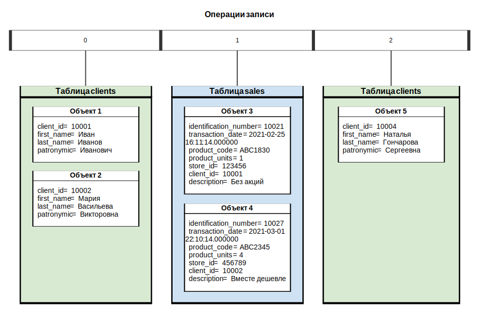

Операция записи — операция загрузки нового состояния объектов из внешнего источника в логическую таблицу. В рамках дельты можно выполнить произвольное количество операций записи.
Каждая операция записи имеет порядковый номер, уникальный среди всех операций записи в логической базе данных. Нумерация начинается с 0. Номера операций записи используются в физических таблицах для обозначения границ периода [sys_from, sys_to], в котором запись была актуальна.
На рисунке ниже показан пример с тремя операциями записи (0, 1, 2) в двух логических таблицах:
clients и sales. В этом примере операции 0 и 2 выполнены по отдельности, однако их изменения могли
быть загружены в таблицу clients в рамках одной операции записи.

Операции записи в двух логических таблицах